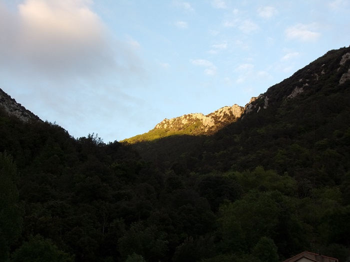

Le col de Saint Martin vu du village

Le col de Saint Martin vu de la croix

Le col de Saint Martin vu du pas du Taïchou, point extrême du cap de fer

Le col de Saint Martin vu du Castel d'en prat, de l'autre coté de l'Aude
Le cap de fer illuminé par le soleil couchant. Col de St Martin vue de la route départementale
Le col de Saint Martin est le passage par lequel a été principalement exploitée la forêt des Fanges en permettant de descendre à l'Aude par un chemin rapide mais pas trop pentu les plus belles grumes. Quand le haut du col fut trop exploité... et complètement défriché, quelques prairies furent aménagées.

Le chemin en violet pointillé permet depuis le village d'atteindre le col
Voir toutes les parcelles cultivables qui ont été prises sur la forêt au niveau du col (peu fertiles, elles servaient de prairie)
Ce chemin est balisé avec une bande jaune et fait parti du circuit de randonnée autour de Saint Martin

En montant vers le col de Saint Martin

Chemin du col - sapin suspendu
C'est aussi par ce col que sont montés les secours qui ont permis de circonscrire rapidement l'incendie qui faillit détruire les Fanges en 1800 (ce qui valut plus tard à Félix Armand la légion d'honneur)
Je vous présenterai d'abord le récit de Louis Amiel, puis celui de J. P. de La Croix du même événement ventant le sens de l'organisation de notre grand homme.
Dans les derniers jours d'août 1800, un incendie éclate vers minuit dans la forêt des Fanges. Le garde du gouvernement accourt jeter l'alarme dans Saint-Martin. Le curé est un des premiers sur pied. Déjà de rougeâtres lueurs teignent les crêtes des rocs environnants, et projettent leurs sinistres clartés sur les toits du village. Courir au clocher, sonner lui-même le tocsin, réunir ensuite tous les hommes valides armés de haches, sans oublier d'envoyer des émissaires dans les villages voisins pour propager l'alarme, puis s'élancer à la tête des siens vers la forêt, tout cela fut exécuté en quelques minutes.
A mesure que les populations des villages voisins arrivent sur le théâtre de l'incendie, il les discipline, les encourage, assigne à chacun son poste, avec cet énergique sang-froid qui commande aux plus braves dans le péril.
Bientôt le bruit sourd et redoublé des haches, qui abattent sans relâche les sapins, pour isoler le reste de la forêt, se confond avec le rugissement des flammes ravivées par la chute des colosses qui craquent en ébranlant le sol.
M. Armand paraît se multiplier ; il est partout, parcourant le front des travailleurs ; ce n'est plus la parole douce et calme du prêtre, c'est la voix tonnante et brève du général, qui domine les clameurs de la mêlée. Mais l'incendie, comme s'il eût compris l'importance de cette furieuse attaque, se ranime soudain sous un vent impétueux d'Espagne, s'élance en spirales plus rapides autour des troncs résineux, dévore en crépitant leur chevelure aérienne, puis replonge en ondes dévorantes sur les travailleurs.

C'est alors que le chef s'élance au premier rang, les rallie, les ramène sous la pluie de feu, à travers les fondrières perfides que la flamme envahissante creuse sous leurs pas, leur assigne un nouveau point d'attaque, et court plus loin répéter la même manœuvre.
Ainsi continua la bataille pendant deux jours et deux nuits ; mille fois les travailleurs, brisés de fatigue et découragés, furent sur le point de quitter la partie ; mais lui les releva toujours en leur soufflant sa force et son courage. Enfin l'incendie fut complètement isolé et vaincu, sans que l'habile chef eût à déplorer la perte d'un seul homme. (Trente-cinq hectares furent complètement brûlés.)1 (la suite du texte reprend également la lettre de remerciement du préfet qui est restituée plus bas)
"C'était en 1800 : l'incendie le plus violent se déclara dans la belle forêt des Fanges, et à minuit, le dernier jour d'Août, le garde forestier du gouvernement vint répandre la nouvelle alarmante dans le village de la Pierre-Lis. Un quart-d'heure après, tous les habitants sont réunis par leur digne curé, et à la tête de ses paroissiens armés de haches, il marche vers la forêt. Les populations de Quillan et des pays voisins arrivèrent plus tard. Il fallait un chef intelligent pour diriger, sans compromettre leur vie, un aussi grand nombre d'hommes au milieu de cet immense brasier : car souvent le feu paraissait éteint à la surface, mais les racines des arbres brûlaient encore profondément, et plus d'un malheureux aurait été enseveli dans ces flammes souterraines sans les conseils de Félix Armand, qui, semblable à un général intrépide, guida pendant trois jours que dura l'incendie, ces paysans abattus et découragés au milieu d'un feu vivement excité par un impétueux vent d'Espagne (Le vent du sud , appelé vent d'Espagne.). Si la parole éloquente de ce prêtre, auquel tous obéissaient avait été muette, c'en était fait de la forêt des Fanges. Malgré le zèle des habitants de la Pierre-Lis, et la promptitude des secours, 155 hectares furent brûlés. Cette action d'éclat fixa les regards sur Félix Armand, et quinze jours après, le préfet de l'Aude écrivait ces lignes au curé de Saint-Martin. Elles sont un témoignage trop vrai de son dévouement et de son courage, pour qu'elles ne soient pas citées.
» Recevez , citoyen , pour vous et pour les habitants de Saint-Martin, l'assurance d'une véritable estime, et de ma disposition constante à vous en donner des marques.
Le préfet de l'Aude
BARANTE. »2
1 Félix Armand, curé de Saint-Martin-Lys: sa vie et son œuvre de Louis Amiel (édition de 1859) 2Vie de Félix Armand, curé de Saint-Martin-Lis, près de Quillan (Aude). de J. P. de La Croix